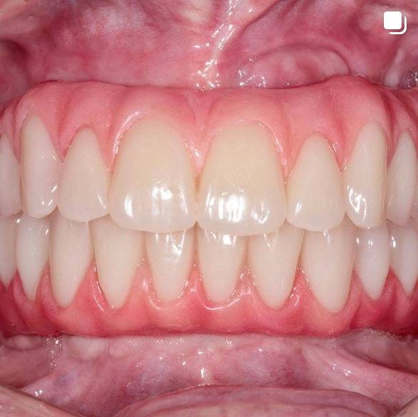

Prótese e Reabilitação Oral
Devolver saúde, estética e função aos pacientes através de próteses sobre dente, implantes, próteses sobre implantes e tratamentos reabilitadores que visam recuperar a capacidade de mastigação e convívio social.
Estética Dental
Melhorar ou devolver a estética do sorriso a partir de tratamentos como clareamento dental, lentes de contato, facetas e coroas de cerâmica. Atualmente a odontologia vive o seu melhor momento na estética, com materiais e técnicas que trazem naturalidade.
Periodontia
Cuidar da saúde da gengiva e do periodonto (tecidos que suportam os dentes) é essencial para a saúde bucal e sistêmica. Mantenha a saúde em dia com as consultas de profilaxia periódicas.

